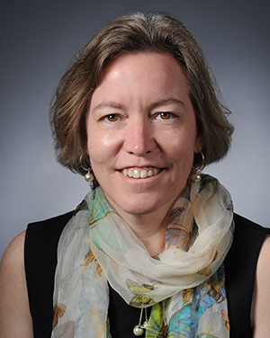

Find us on Twitter
Find us on TwitterSpeakers
| KEYNOTE Jerry L. Hatfield currently serves as the Laboratory Director for the National Laboratory for Agriculture and the Environment, Ames, Iowa, and Director of the Midwest Climate Hub. With a background in agricultural climatology, Dr. Hatfield has focused his research on soil-plant-environment interactions and quantifying the effect of weather and climate on crop productivity. He knows farmers and producers deal with the weather every year and they have the tools to decrease their variation in crop production by ensuring their soil is in the best state possible to supply water and nutrients to the crop. His vision is to build climate resilient cropping systems by creating a whole new understanding of the genetics x environment x management interactions. |
|
|  | KEYNOTE Catherine L Kling is a Charles F. Curtiss Distinguished Professor of Agriculture and Life Sciences and a professor of economics at Iowa State University. She serves as the director of the Center for Agriculture and Rural Development (CARD), a USDA-NIFA policy research center. In her work at CARD, Dr. Kling is undertaking research to examine how agricultural practices affect water quality, wildlife, soil carbon content, and greenhouse gases.
|
 |
Robert Anex has been a Professor of Biological Systems Engineering at the University of Wisconsin, Madison since 2010. He has studied agriculture and the sustainable use of agricultural products since 1995 while at the University of Oklahoma and Iowa State University. He studies the economic and environmental sustainability of agricultural systems. His recent focus has been on understanding and adapting to the variability in agricultural to increase resilience. Dr. Anex was raised on a small family farm in Northern California where he learned the importance of work and paying the bills. He says, “Our children's children's children will need productive farms in order to have food to eat.” |
| J. Gordon Arbuckle Jr. is an Extension Sociologist at Iowa State University, in Ames, Iowa and Rural Life Poll, an annual survey of Iowa farmers. His research and extension efforts focus on improving the environmental and social performance of agricultural systems emphasizing on soil and water quality. J. helps to manage family farms in Boone County, MO (cow-calf) and Scott County, IN (soybean), with the Indiana farm in his family since 1865. He encourages “farmers and agricultural advisors to think in terms of decades or generations, rather than years, when making decisions that impact soil health.” | |
 |
Mike Dunbar came to Iowa State in 2008 where he earned a MS in ecology and evolutionary biology studying rotation resistance in corn rootworm. Currently, he is working towards a PhD in entomology and focusing on how cover crops and crop rotation schemes interact with both beneficial and pest insects. He is particularly interested in the interaction of crop rotation schemes and the evolution of Bt resistance in corn rootworm. He believes that crop rotation and increased landscape diversity are simple solutions to many of our current dilemmas. |
 |
Chad Hart is an associate professor of economics and extension economist at Iowa State University. He has been affiliated with Iowa State University over 20 years and appointed as faculty and extension member for 6 years. His expertise is in cover crop marketing, agricultural and energy policy, biofuels, and international trade. He is originally from southwest Missouri where his family raised a few cattle and had a locker plant. “It’s hard to lose money making a profit,” says Hart. |
 |
Matt Helmers is a Dean's Professor in the College of Agriculture and Life Sciences and Professor in the Department of Agriculture and Biosystems Engineering at Iowa State University. He has been at Iowa State for 11 years conducting research and extension activities on drainage water quality and ways to optimize drainage while minimizing nitrate loss. He spent much of his youth on his grandfather's farm in northwest Iowa. “My goal with my work is to ensure economic vitality of agriculture while improving water quality," says Helmers. |
 |
Jonathan Hobbs has been working as a Postdoctoral Scholar at the Jet Propulsion Laboratory at the California Institute of Technology since the beginning of 2014, after completing his PhD work in statistics and meteorology at Iowa State University. At JPL he is involved in NASA's Orbiting Carbon Observatory mission, which will provide high resolution-information on atmospheric carbon dioxide. At Iowa State he spent several years as a statistical consultant and data analyst on a variety of projects in agriculture and social science. Dr. Hobbs has a long-standing interest in the regional water cycle of the central United States and its importance in agriculture. “Land-grant institutions provide assets to resilient agriculture through both high-quality scientific research and effective communication and outreach," says Hobbs. |
 |
Chad Ingels has been an Extension watershed specialist for 14 years in northeast Iowa. He provides facilitation and administration services for farmer-led watershed councils as they develop and implement performance-based incentive programs in their impaired watersheds. Chad is the Extension lead for the Sustainable Corn Project, coordinating the team's Extension educators across the nine states. He has coordinated over 200 on-farm soil, water and nutrient management demonstrations over the course of his Extension career. His current focus is on assisting farmers with evaluations of cover crops and denitrifying bioreactors through in-field, edge-of-field and stream monitoring efforts. “It's an exciting time to be involved in agriculture with new technological advances seemingly every cropping season. Farmers with their relatively strong financial positions are working to reduce their environmental impact while continuing to increase crop production and build resilience into their farming operations," says Ingels. |
| Eileen J. Kladivko is Professor of Agronomy at Purdue University where she teaches and does research and Extension work in soil physics, soil biology and soil management. Her research studies have included cover crops, soil health, earthworms, no-till and drainage and water quality over the past 32 years. She is a founding member of the Midwest Cover Crops Council. Her overall research focus has been to identify soil management systems that improve environmental quality and promote agricultural sustainability. | |
 |
Rattan Lal has been afflicted with The Ohio State University since 1987 and currently serving as distinguished professor of soil science and director for Carbon Management and Sequestration Center. He also teaches courses like environmental soil physics and soil and climate change. His research interests are soil carbon sequestration, soil quality, sustainable intensification, tropical soils and food security. He grew up on farm and is familiar with agriculture in developing and developed countries. “Produce more from less by decreasing losses, increasing use efficiency and recycling by-products," says Lal. |
 |
Joe Lauer grew up in north central Minnesota and holds degrees from St. John's University and the University of Minnesota. From 1985 to 1994, he was faculty extension agronomist at the University of Wyoming. In 1994, Joe joined the Agronomy faculty at the University of Wisconsin as a corn extension agronomist where he is responsible for developing education programs and materials for Wisconsin farmers and industry. His mission at the university is to develop relevant corn management programs that address needs expressed by Wisconsin farmers. Specific objectives of this project focus on management decision-making regarding crop productivity, quality, and production system efficiency including hybrid selection, rotation, tillage, replanting and yield loss damage assessments. Emphasis is on impact of cropping practices, on grower profitability, the environment, and natural resource conservation. |
| Scott Lee is a Graduate Research Assistant at Iowa State University pursuing a PhD in Soil Science with an emphasis in Soil Management. Prior to his studies at Iowa State, he practiced as a licensed Professional Civil Engineer in the field of water resources engineering for 12 years. His current research efforts are focused on evaluating the impact of soil erosion on crop yields. His goal is "to protect our soil resources and ensure a sustainable agricultural future through conversation-minded practices." | |
| John Sawyer is a professor and extension soil fertility specialist in the Department of Agronomy at Iowa State University. He provides statewide leadership for extension soil fertility and nutrient management programs. His research focus is the study of nutrients in soils and plants, and fertilizer and manure nutrient management related to crop production and the environment. Dr. Sawyer grew up on a grain-livestock farm in Northern Ohio and worked at the University of Illinois and GROWMARK, Inc. regional cooperative before coming to Iowa State University. “Farmers utilize the soil resource for production of food, feed, fiber, and bioenergy. They operate a business that must balance profitability with maintenance of the soil and water resources -- which are tough challenges," says Sawyer. | |
 |
Jeffery S. Strock is a Professor and Soil Scientist at the University of Minnesota in the Department of Soil, Water and Climate. He has been a member of the Faculty since 1999 and is located at the Southwest Research and Outreach Center, near Lamberton, MN. Dr. Strock’s research and outreach/education program focuses on agricultural drainage and water and nutrient management in agricultural systems, addressing production needs, and quantifying/mitigating negative off-site environmental impacts. His mission is to inform agricultural and non-agricultural stakeholders about the associated risks and benefits of various soil and water conservation and management practices on crop productivity, profitability, and environmental quality. |
 |
Hans Schmitz began in Purdue Extension as a 4-H Youth Development and Ag and Natural Resources Educator in Orange County, Indiana. After 6 years in service, he currently serves as the County Extension Director and Ag and Natural Resources Educator in Gibson County, Indiana. As a sixth generation farmer, Hans owns one Ayrshire dairy heifer. “The effects of climate change and extreme weather variability affect farmers more greatly than nearly any other occupation," says Hans. |
 |
Dick Wolkowski served as an Extension Soil Scientist and research soil scientist in the UW-Madison, Department of Soil Science for 22 years. Prior to that, He has worked in the same department as a research specialist for 10 years. He retired in 2011 after a 32 year career at the University during which he was involved in the area of soil management, which included tillage, soil compaction, soil quality, soil conservation, nutrient management, and the land application of municipal and industrial wastes. His wife Terry and he are expecting their tenth grandchild in October. “I learned from my years in Extension that most farmers care about proper soil management and want to do things right. I found my job often became that of a coach, where my job was to encourage and help them exhibit their own talents," says Wolkowski. |